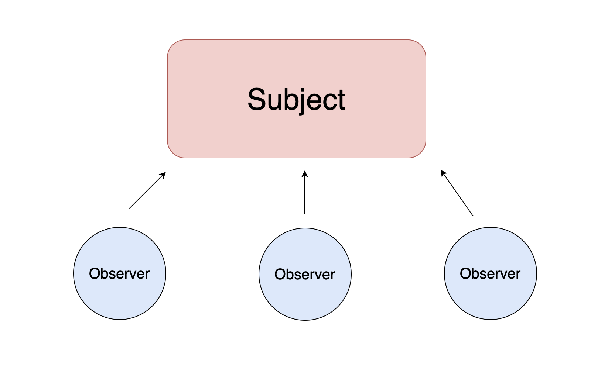
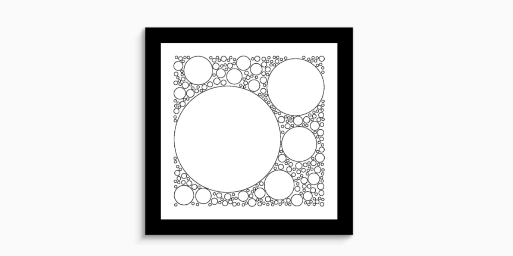
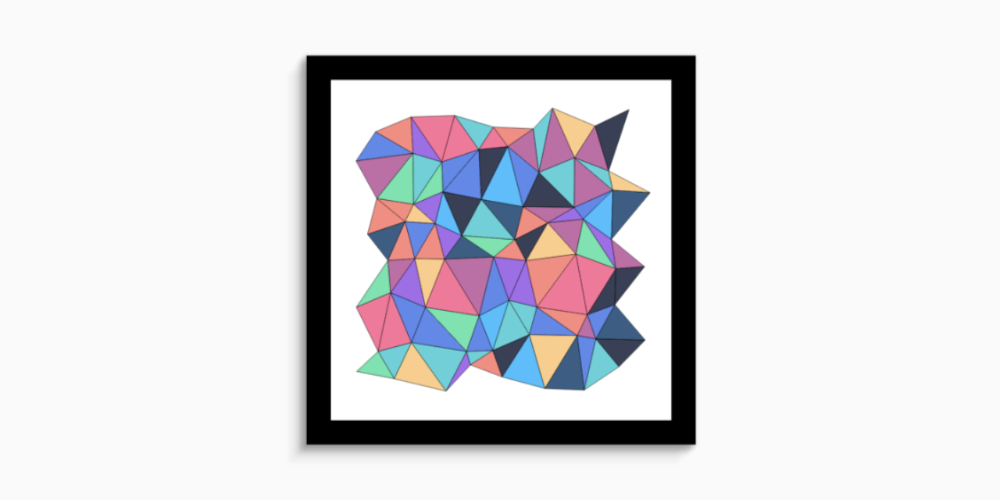
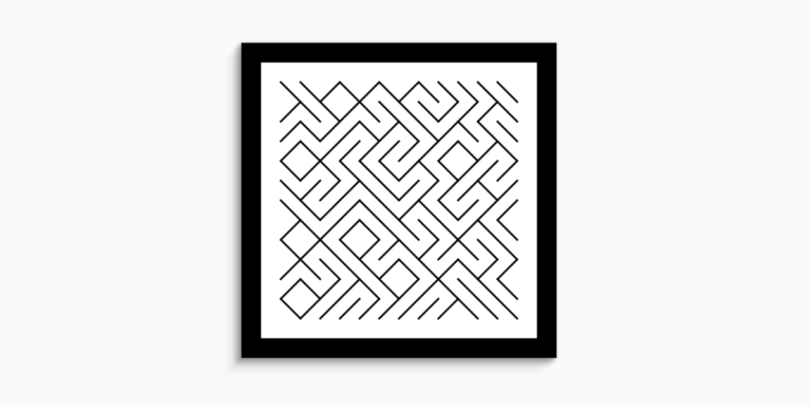
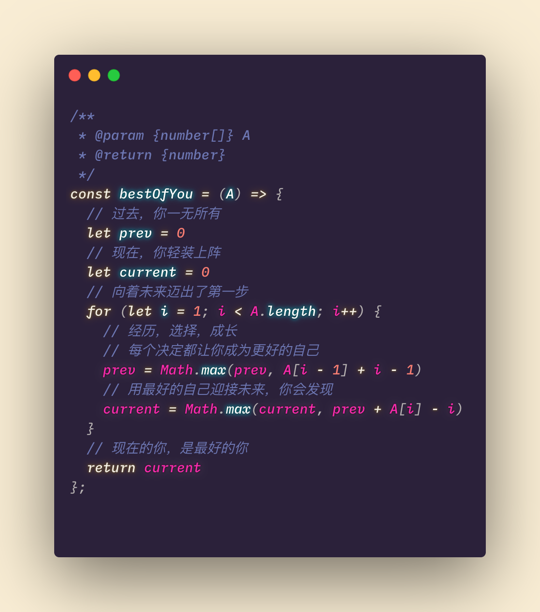
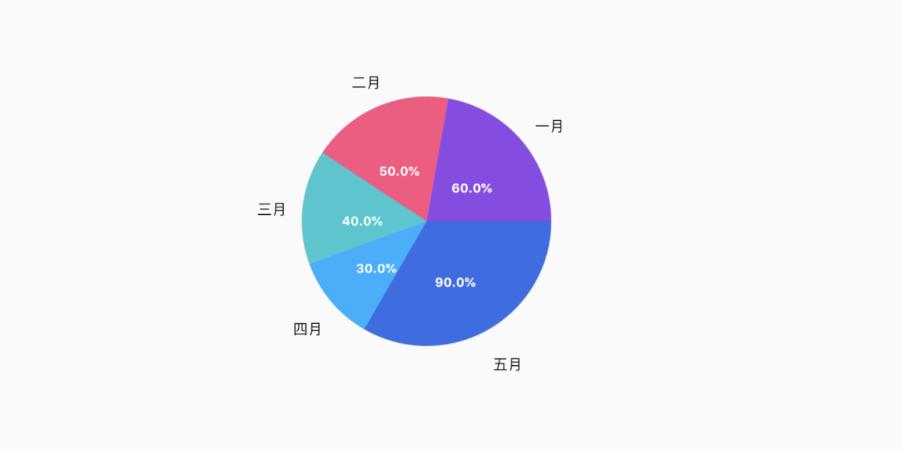
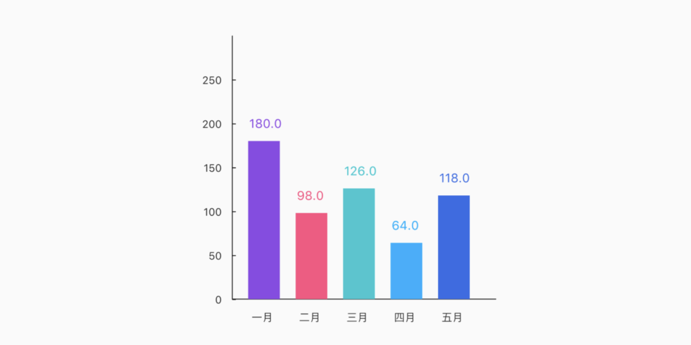
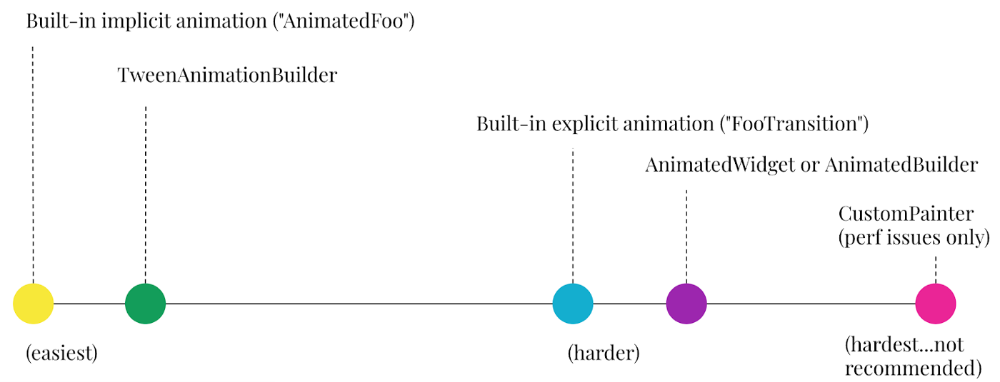
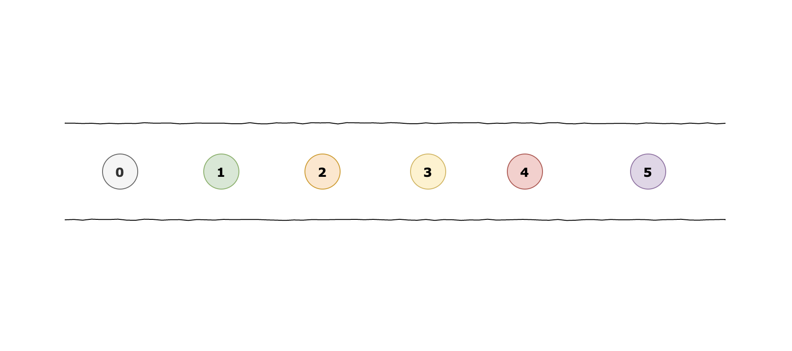

- 字数: 1.2k
认识 Range 和 Selection 对象
Web - 字数: 234
什么是 peerDependencies
package.json里面的peerDependencies是什么意思npm - 字数: 775
学习观察者模式

Design Patterns - 字数: 1.3k
Flutter 绘制图形 Circle Packing

Flutter Generative artistry - 字数: 739
阿里的三道面试题
Interview - 字数: 402
使用 Github Action 发布 Flutter 插件
本文说明如何使用 Github Actions 自动发布 Flutter 插件到 pub.dev
Flutter Github - 字数: 1.1k
Flutter 绘制三角网格 Triangular Mesh

Flutter Generative artistry - 字数: 939
Flutter 绘制瓷砖线 Tiled Lines

Flutter Generative artistry - 字数: 3.3k
用 Flutter 实现探探卡片布局
 Flutter
Flutter - 字数: 8
最好的你

leetcode - 字数: 2k
Flutter 绘制图表（二）饼状图🍪

Flutter - 字数: 2k
Flutter 绘制图表（一）柱状图📊

Flutter - 字数: 83
选择适合的 Flutter 动画控件

Flutter Animation - 字数: 2.6k
从零开始的 Flutter 动画
Flutter Animation - 字数: 1.9k
在 Flutter 里使用 Stream

Flutter - 字数: 1.4k
Flutter 是如何渲染的？
Flutter - 字数: 835
PlantUML 类图及 Flowchart 流程图绘制入门
 PlantUML Flowchart
PlantUML Flowchart - 字数: 381
记录两个使用 Flutter 的 DropdownButton 问题
Flutter - 字数: 1.1k
数据结构与算法之二叉树
二叉树是一种非线性的数据结构，以分层的方式存储数据。在二叉树上进行添加，查找和删除数据非常快。
DSA